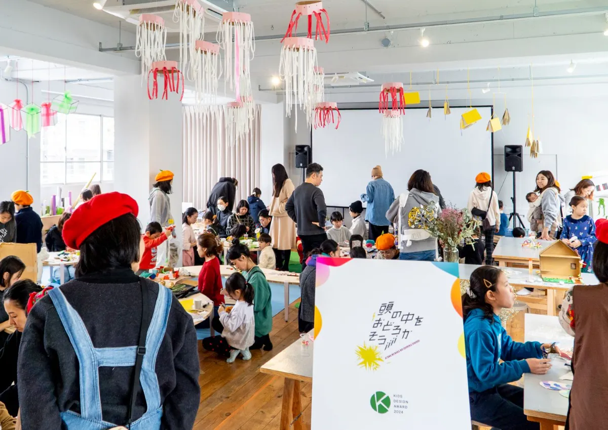
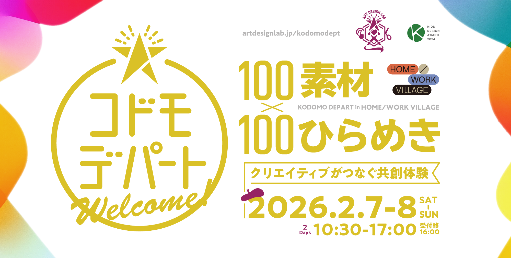
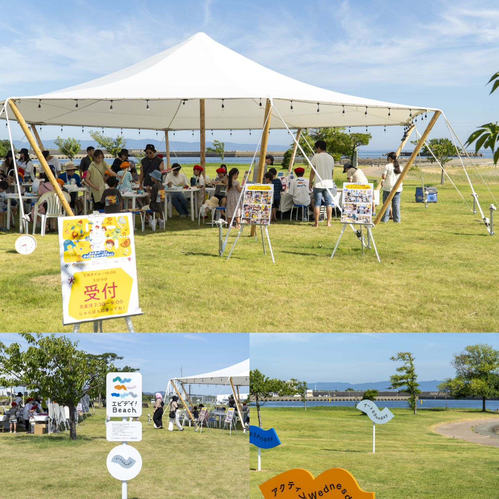
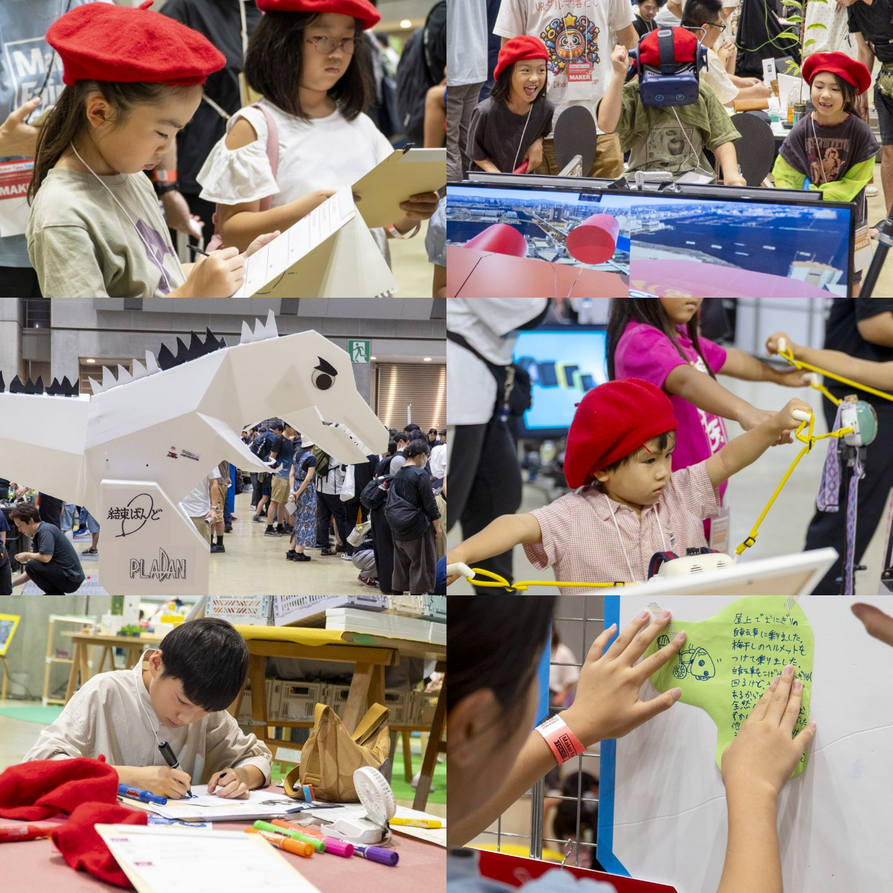

babytoi
アートデザインラボ
2023〜
アートデザインラボは「すべての子どもたちの好奇心と表現を守る」をミッションに、2018年に世田谷区でスタートしました。好奇心とそこから生まれる表現は、人の大切な"根っこ"と考え、そのために「どんな子どもの好奇心も枯れさせない」というビジョンのもと活動しています。VUCA時代に求められるスキル（課題発見力、仮説構築力、共創力）を、自意識の芽生える４歳から育むことができるよう「頭の中を、おどろかそう！」をコンセプトに、問いを育てるメソッドで子どもたちをサポートしています。
シンタケダは、「生徒数を増やしたい」という当初のご相談に対し、教育の"質"こそが最大の強みであると再定義。スクールの魅力や特徴を言語化し、企業向けや地域向けイベント等での活動を通じて「質の高さ」をブランド資産へと転換する伴走支援を行っています。
2024年にはキッズデザイン賞「キッズデザイン協議会会長賞」を受賞し、教育の質が客観的に証明されました。現在は自治体や企業との連携案件も増加しており、スクールの枠を超えて活動のフィールドが大きく広がっています。
取り組み100素材×100ひらめき コドモデパート
子どもたちが"店長"となって運営する、期間限定の工作デパート。100種類以上の素材から自由に「ひらめき」を形にする「クリエイティブがつなぐ共創体験」を、地元世田谷区のHOME/WORK VILLAGEで開催しました。



コドモデパート in 富山の海
地域独自の素材を活用し、その土地ならではのひらめきを引き出す地方展開モデルとして、コドモデパートを富山県海老江海岸で開催しました。富山の豊かな自然環境を背景に、子どもたちの表現が地域コミュニティを活性化する場をデザインしました。


いこーよフェスタ2025
大型イベントを舞台に、子どもたちが記者となって取材・発信するプログラム。「体験し、話を聞き、言葉にする」というプロセスを通じて、子どもたちの主体性を育むユーザー体験を設計しています。

メーカーフェア東京
地上最大のDIYの展示発表会「Maker Faire（メイカーフェア）」において、子どもたちが記者となって作り手（メイカー）にインタビューを実施。子どもの視点で技術や創作の魅力を再発見し、可視化する試みを行いました。

「コドモデパートPOPUP!」 in 三茶縁日
地域のお祭りと連携した、機動力のあるポップアップ形式のコドモデパート。日常の延長線上にある賑わいの中で、多くの子どもたちが表現に触れるきっかけとなるタッチポイントを創出しました。